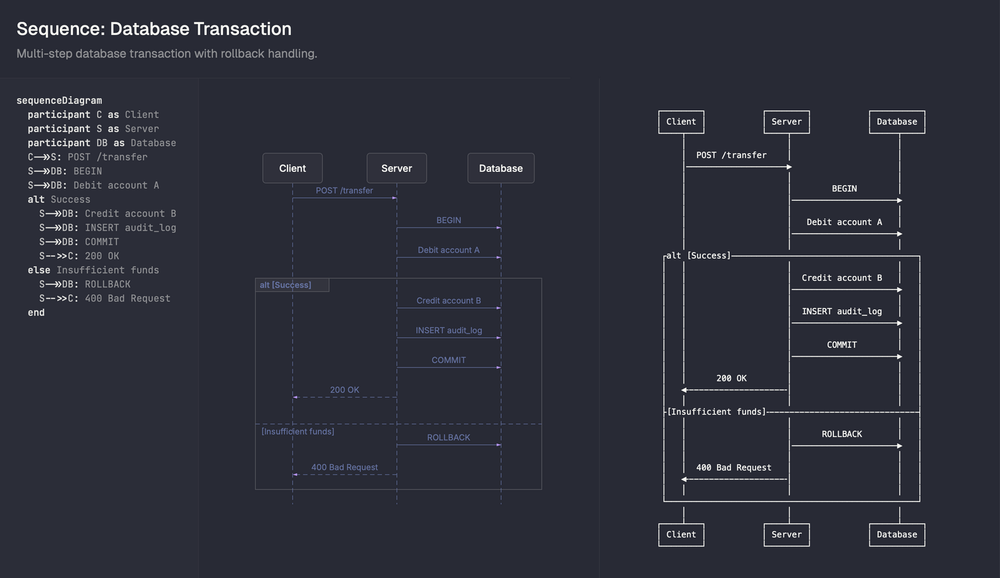

一键安装必做
npx skills add https://github.com/imxv/pretty-mermaid-skills --skill pretty-mermaid
首次运行会自动安装依赖，只要机器上有 Node.js ≥ 14 即可。
一个面向 AI 助手的 Mermaid 图表渲染 Skill：一键安装、单图渲染、批量渲染、主题切换、ASCII 终端输出。适合 Claude Code、Cursor、Gemini CLI、OpenCode、Codex 等环境。
先装进 Skill，再用最少步骤跑起来。
npx skills add ... --skill pretty-mermaidassets/example_diagrams/*.mmdSKILL.md / README.md不是教你跑脚本，而是告诉你：什么场景该让 Agent 触发它。
.mmd 模板快速生成一张成图下面不是示意图，而是我用仓库自带示例实际渲染出来的成品效果。

不用背全表，按亮色 / 暗色快速记忆。
把真正值得记住的东西留下：入口、能力、边界，而不是脚本参数表。
README.md / README_CN.md / SKILL.mdassets/example_diagrams/beautiful-mermaid 做更好看的 Mermaid 渲染
github.com/imxv/Pretty-mermaid-skills · SKILL / README / DIAGRAM_TYPES / THEMES / example_diagrams